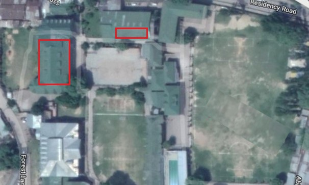

The school board allows the students to practically do what they learn in classes by providing them with fully equipped science and computer labortaries. The science labortaries for the senior department are not that good but the science labortaries are good for the +2 department. Ironically the computer lab is same for classes 6th to 12th.
The location of the department is shown in the following map.
